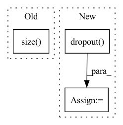

Pattern ID :2972
Before Change
batch_size = encoder_out.size(0)
encoder_dim = encoder_out.size(-1)
vocab_size = self.vocab_size
num_pixels = encoder_out.size( 1)
// Sort input data by decreasing lengths; why? For each of data in the batch, when len(prediction) = len(caption_lengths), Stop.
caption_lengths, sort_ind = caption_lengths.squeeze(1).sort(dim=0, descending=True)
After Change
// 0 0 0 0 1 2
// 0 0 0 0 1 1
dec_outputs = self.tgt_emb(encoded_captions) + self.pos_emb(torch.LongTensor([list(range(52))]*batch_size).to(device))
dec_outputs = self.dropout( dec_outputs)
dec_self_attn_pad_mask = self.get_attn_pad_mask(encoded_captions, encoded_captions)
dec_self_attn_subsequent_mask = self.get_attn_subsequent_mask(encoded_captions)
dec_self_attn_mask = torch.gt((dec_self_attn_pad_mask + dec_self_attn_subsequent_mask), 0)
In pattern: SUPERPATTERN
Frequency: 3
Non-data size: 3
Instances Fragment ID: 9914917
Project Name: royalskye/image-caption
Commit Name: 569502dd85be28a1e6a10bc8873b7cd0446556b8
Time: 2020-04-06
Author: a19970417b@qq.com
File Name: transformer.py
M Class Name: Decoder
N Class Name: Decoder
M Method Name: forward(4)
N Method Name: forward(4)
M Parent Class: nn.Module
N Parent Class: nn.Module
M File Name: transformer.py
N File Name: transformer.py
M Start Line: 150
M End Line: 189
N Start Line: 160
N End Line: 191
Before Change
memory_input = torch.div(outputs[-1] + memory[t-1], 2.0)
// add a random noise
memory_input += torch.autograd.Variable(
torch.randn(memory_input.size() )).type_as(memory_input)
// Prenet
processed_memory = self.prenet(memory_input)After Change
else:
// combine prev. model output and prev. real target
memory_input = torch.div(outputs[-1] + memory[t-1], 2.0)
memory_input = torch.nn.functional.dropout( memory_input,
0.1,
training=True)
// add a random noise
noise = torch.autograd.Variable(
memory_input.data.new(ins.size()).normal_(0.0, 1.0))
memory_input = memory_input + noise
// Prenet
processed_memory = self.prenet(memory_input) Fragment ID: 9914915
Project Name: coqui-ai/tts
Commit Name: 56f8b2d19f90807ce7e5801b780a8d4a6da96541
Time: 2018-02-26
Author: egolge@mozilla.com
File Name: layers/tacotron.py
M Class Name: Decoder
N Class Name: Decoder
M Method Name: forward(4)
N Method Name: forward(4)
M Parent Class: nn.Module
N Parent Class: nn.Module
M File Name: layers/tacotron.py
N File Name: layers/tacotron.py
M Start Line: 309
M End Line: 312
N Start Line: 309
N End Line: 316
Before Change
Args:
input: N x T x D
length = input.size( 1)
return self.pe[:, :length]
After Change
// x is batch, channels, seq_len
x = x + self.pe[:, :, :x.size(2)]
x = self.dropout( x)
x = x.permute(0, 2, 1).contiguous()
return x Fragment ID: 9914911
Project Name: zhongyang-debug/attention-is-all-you-need-in-speech-separation
Commit Name: 361486e2e14685189e9a65a81fa779b4728c6e18
Time: 2022-08-16
Author: 68770882+Zhongyang-debug@users.noreply.github.com
File Name: model/sepformer.py
M Class Name: Positional_Encoding
N Class Name: Positional_Encoding
M Method Name: forward(2)
N Method Name: forward(2)
M Parent Class: nn.Module
N Parent Class: nn.Module
M File Name: model/sepformer.py
N File Name: model/sepformer.py
M Start Line: 133
M End Line: 135
N Start Line: 143
N End Line: 155